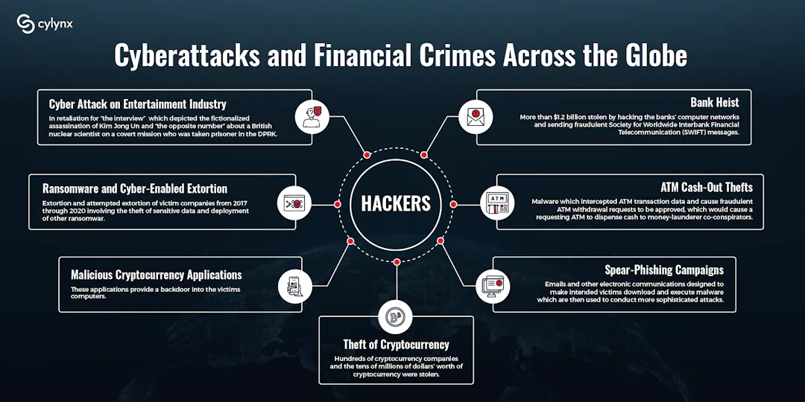

Taloudelliset hyökkäykset
Taloudelliset kyberuhkat kohdistuvat rahoituslaitoksiin, yrityksiin ja hallituksiin. Nämä hyökkäykset voivat aiheuttaa merkittäviä taloudellisia menetyksiä ja häiritä liiketoimintaa.
Taloudelliset kyberhyökkäykset ovat digitaalisessa toimintaympäristössä tapahtuvia iskuja, joiden ensisijaisena tavoitteena on aiheuttaa taloudellista vahinkoa, kiristää rahaa tai varastaa arvokasta tietoa. Nämä hyökkäykset ovat kasvaneet maailmanlaajuisesti, ja ne kohdistuvat yhä useammin sabotaasin kautta yritysten liiketoiminnan häiritsemiseen. Tässä keskeisiä asioita taloudellisista kyberhyökkäyksistä: Yleisimmät taloudelliset kyberhyökkäykset Kiristyshaittaohjelmat (Ransomware): Hyökkääjät kaappaavat yrityksen tietojärjestelmät ja vaativat lunnasrahoja niiden palauttamisesta. Tietovarkaudet: Pankki- ja rahoitusala on erityisen suojattu, mutta myös yritysten liikesalaisuuksia ja asiakastietoja varastetaan, mikä johtaa suuriin taloudellisiin menetyksiin. Palvelunestohyökkäykset (DDoS): Järjestelmät tukitaan liikenteellä, mikä estää normaalin liiketoiminnan ja aiheuttaa seisokkiaikoja. Tekoälyavusteiset hyökkäykset: Rikolliset käyttävät kehittyneitä tekniikoita, kuten generatiivista tekoälyä, tehokkaampien hyökkäysten tekemiseen.

Taloudelliset seuraukset Liiketoiminnan keskeytyminen: Järjestelmien kaatuminen voi pysäyttää tuotannon tai palvelut, mikä aiheuttaa välittömiä tulonmenetyksiä. Lunnasrahat ja mainehaitat: Kiristyshaittaohjelmien maksaminen (esim. 5 miljoonan dollarin lunnasrahat Colonial Pipeline -tapauksessa) ja asiakasluottamuksen menetys voivat olla tuhoisia. Globaalit kustannukset: Kyberrikollisuuden globaalit taloudelliset kustannukset ovat olleet miljardeja euroja (vuonna 2020 arvioitu 5,5 biljoonaa euroa). Suojautuminen Varmuuskopiot: Tärkeiden tietojen säännöllinen varmuuskopiointi on paras suoja kiristyshaittaohjelmia vastaan. Salaus: Arkaluonteisten tietojen (asiakas- ja työntekijätiedot) salaaminen. Kyberturvakäytäntöjen tarkistus: Yritysten on säännöllisesti tarkistettava suojauksensa ja päivitettävä ohjelmistonsa. Suomeen kohdistuva kyberuhkataso on pysynyt kohonneena, ja hyökkäyksiä kohdistuu yhä enemmän kriittiseen infrastruktuuriin ja yrityksiin.